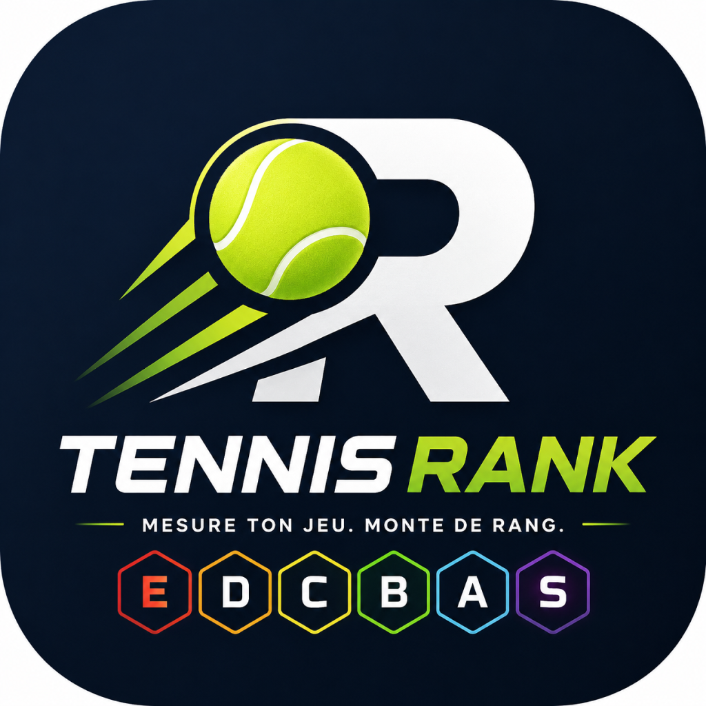

À propos de Tennis Rank
Tennis Rank associe une échelle E–S, une évaluation en cinq questions et des objectifs de progression faciles à comprendre.
L'application appelle /api/mobile/sync pour obtenir
l'index des pages, puis charge chaque page HTML avec son htmlUrl.
Les écrans levels.html et assessment.html
peuvent être affichés dans une WebView.